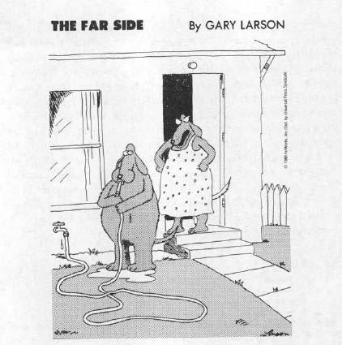
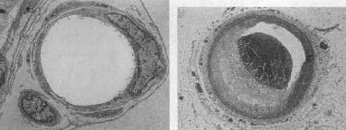
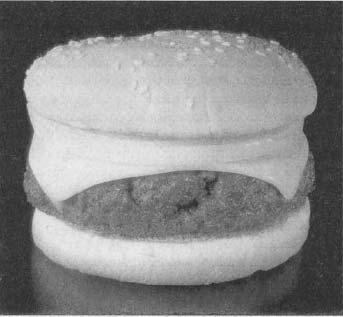
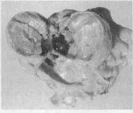

It’s one of those unexpected emergencies: you’re walking down the street, on your way to meet a friend for dinner. You’re already thinking about what you’d like to eat, savoring your hunger. Come around the corner and—oh no, a lion! As we now know, activities throughout your body shift immediately to meet the crisis: your digestive tract shuts down and your breathing rate skyrockets. Secretion of sex hormones is inhibited, while epinephrine, norepinephrine, and glucocorticoids pour into the bloodstream. And if your legs are going to save you, one of the most important additional things that better be going on is an increase in your cardiovascular output, in order to deliver oxygen and energy to those exercising muscles.
It’s one of those unexpected emergencies: you’re walking down the street, on your way to meet a friend for dinner. You’re already thinking about what you’d like to eat, savoring your hunger. Come around the corner and—oh no, a lion! As we now know, activities throughout your body shift immediately to meet the crisis: your digestive tract shuts down and your breathing rate skyrockets. Secretion of sex hormones is inhibited, while epinephrine, norepinephrine, and glucocorticoids pour into the bloodstream. And if your legs are going to save you, one of the most important additional things that better be going on is an increase in your cardiovascular output, in order to deliver oxygen and energy to those exercising muscles.
The Cardiovascular Stress-Response
Activating your cardiovascular system is relatively easy, so long as you have a sympathetic nervous system plus some glucocorticoids and don’t bother with too many details. The first thing you do is shift your heart into higher gear, get it to beat faster. This is accomplished by turning down parasympathetic tone, and in turn activating the sympathetic nervous system. Glucocorticoids add to this as well, both by activating neurons in the brain stem that stimulate sympathetic arousal, and by enhancing the effects of epinephrine and norepinephrine on heart muscle. You also want to increase the force with which your heart beats. This involves a trick with the veins that return blood to your heart. Your sympathetic nervous system causes them to constrict, to get more rigid. And that causes the returning blood to blast through those veins with more force. Blood returns to your heart with more force, slamming into your heart walls, distending them more than usual…and those heart walls, like a stretched rubber band, snap back with more force.
So your heart rate and blood pressure have gone up. The next task is to distribute the blood prudently throughout that sprinting body of yours. Arteries are relaxed—dilated—that lead to your muscles, increasing blood flow and energy delivery there. At the same time, there is a dramatic decrease in blood flow to nonessential parts of your body, like your digestive tract and skin (you also shift the pattern of blood flow to your brain, something that will be discussed in chapter 10). The decrease in blood flow to the gut was first noted in 1833, in an extended study of a Native American who had a tube placed in his abdomen after a gunshot wound there. When the man sat quietly, his gut tissues were bright pink, well supplied with blood. Whenever he became anxious or angry, the gut mucosa would blanch, because of decreased blood flow. (Pure speculation, perhaps, but one suspects that his transients of anxiety and anger might have been related to those white folks sitting around experimenting on him, instead of doing something useful, like sewing him up.)
There’s one final cardiovascular trick in response to stress, involving the kidneys. As that zebra with its belly ripped open, you’ve lost a lot of blood. And you’re going to need that blood to deliver energy to your exercising muscles. Your body needs to conserve water. If blood volume goes down because of dehydration or hemorrhage, it doesn’t matter what your heart and veins are doing; your ability to deliver glucose and oxygen to your muscles will be impaired. What’s the most likely place to be losing water? Urine formation, and the source of the water in urine is the bloodstream. Thus, you decrease blood flow to your kidneys and, in addition, your brain sends a message to the kidneys: stop the process, reabsorb the water into the circulatory system. This is accomplished by the hormone vasopressin (known as antidiuretic hormone for its ability to block diuresis, or urine formation), as well as a host of related hormones that regulate water balance.
A question no doubt at the forefront of every reader’s mind at this point: if one of the features of the cardiovascular stress-response is to conserve water in the circulation, and this is accomplished by inhibition of urine formation in the kidneys, why is it that when we are really terrified, we wet our pants? I congratulate the reader for homing in on one of the remaining unanswered questions of modern science. In trying to answer it, we run into a larger one. Why do we have bladders? They are dandy if you are a hamster or a dog, because species like those fill their bladders up until they are just about to burst and then run around their territories, demarcating the boundaries—odoriferous little “keep out” signs to the neighbors.* A bladder is logical for scent-marking species, but I presume that you don’t do that sort of thing.* For humans, it is a mystery, just a boring storage site. The kidneys, now those are something else. Kidneys are reabsorptive, bidirectional organs, which means you can spend your whole afternoon happily putting water in from the circulation and getting some back and regulating the whole thing with a collection of hormones. But once the urine leaves the kidneys and heads south to the bladder, you can kiss that stuff good-bye; the bladder is unidirectional. When it comes to a stressful emergency, a bladder means a lot of sloshy dead weight to carry in your sprint across the savanna. The answer is obvious: empty that bladder.*

“So! Planning on roaming the neighborhood with some of your buddies today?”
Everything is great now—you have kept your blood volume up, it is roaring through the body with more force and speed, delivered where it is most needed. This is just what you want when running away from a lion. Interestingly, Marvin Brown of the University of California at San Diego and Laurel Fisher of the University of Arizona have shown that a different picture emerges when one is being vigilant—a gazelle crouching in the grass, absolutely quiet, as a lion passes nearby. The sight of a lion is obviously a stressor, but of a subtle sort; while having to remain as still as possible, you must also be prepared, physiologically, for a wild sprint across the grasslands with the briefest of warnings. During such vigilance, heart rate and blood flow tend to slow down, and vascular resistance throughout the body increases, including in the muscles. Another example of the complicating point brought up at the end of chapter 2 about stress signatures—you don’t turn on the identical stress-response for every type of stressor.
Finally, the stressor is over, the lion pursues some other pedestrian, you can return to your dinner plans. The various hormones of the stress-response turn off, your parasympathetic nervous system begins to slow down your heart via something called the vagus nerve, and your body calms down.
Chronic Stress and
Cardiovascular Disease
So you’ve done all the right things during your lion encounter. But if you put your heart, blood vessels, and kidneys to work in this way every time someone irritates you, you increase your risk of heart disease. Never is the maladaptiveness of the stress-response during psychological stress clearer than in the case of the cardiovascular system. You sprint through the restaurant district terrified, and you alter cardiovascular functions to divert more blood flow to your thigh muscles. In such cases, there’s a wonderful match between blood flow and metabolic demand. In contrast, if you sit and think about a major deadline looming next week, driving yourself into a hyperventilating panic, you still alter cardiovascular function to divert more blood flow to your limb muscles. Crazy. And, potentially, eventually damaging.
How does stress-induced elevation of blood pressure during chronic psychological stress wind up causing cardiovascular disease, the number one killer in the United States and the developed world? Basically, your heart is just a dumb, simple mechanical pump, and your blood vessels are nothing more exciting than hoses. The cardiovascular stress-response essentially consists of making them work harder for a while, and if you do that on a regular basis, they will wear out, just like any pump or hose you’d buy at Sears.
The first step in the road to stress-related disease is developing hypertension, chronically elevated blood pressure.* This one seems obvious: if stress causes your blood pressure to go up, then chronic stress causes your blood pressure to go up chronically. Task accomplished, you’ve got hypertension.
It’s a bit messier because a vicious cycle emerges at this point. The little blood vessels distributed throughout your body have the task of regulating blood flow to the local neighborhoods as a means of ensuring adequate local levels of oxygen and nutrients. If you chronically raise your blood pressure—chronically increase the force with which blood is coursing through those small vessels—those vessels have to work harder to regulate the blood flow. Think of the ease it takes to control a garden hose spritzing water versus a firehose with a hydrant’s worth of force gushing through it. The latter takes more muscle. And that’s precisely what happens at these small vessels. They build a thicker muscle layer around them, to better control the increased force of blood flow. But as a result of these thicker muscles, these vessels now have become more rigid, more resistant to the force of blood flow. Which tends to increase blood pressure. Which tends to further increase vascular resistance. Which tends…
So you’ve gotten yourself chronically high blood pressure. This isn’t great for your heart. Blood is now returning to your heart with more force and, as mentioned, this makes for a greater impact upon the heart muscle wall that encounters that tsunami. Over time, that wall will thicken with more muscle. This is termed “left ventricular hypertrophy,” which means increasing the mass of the left ventricle, the part of the heart in question. Your heart is now lopsided, in a sense, being overdeveloped in one quadrant. This increases the risk of developing an irregular heartbeat. And more bad news: in addition, this thickened wall of ventricular heart muscle may now require more blood than the coronary arteries can supply. It turns out that after controlling for age, having left ventricular hypertrophy is the single best predictor of cardiac risk.
The hypertension isn’t good for your blood vessels, either. A general feature of the circulatory system is that, at various points, large blood vessels (your descending aorta, for example) branch into smaller vessels, then into even smaller ones, and so on, down to tiny beds of thousands of capillaries. This process of splitting into smaller and smaller units is called bifurcation. (As a measure of how extraordinarily efficient this repeated bifurcation is in the circulatory system, no cell in your body is more than five cells away from a blood vessel—yet the circulatory system takes up only 3 percent of body mass.) One feature of systems that branch in this way is that the points of bifurcation are particularly vulnerable to injury. The branch points in the vessel wall where bifurcation occurs bear the brunt of the fluid pressure slamming into them. Thus, a simple rule: when you increase the force with which the fluid is moving through the system, turbulence increases and those outposts of wall are more likely to get damaged.
With the chronic increase in blood pressure that accompanies repeated stress, damage begins to occur at branch points in arteries throughout the body. The smooth inner lining of the vessel begins to tear or form little craters of damage. Once this layer is damaged, you get an inflammatory response—cells of the immune system that mediate inflammation aggregate at the injured site. Moreover, cells full of fatty nutrients, called foam cells, begin to form there, too. In addition, during stress the sympathetic nervous system makes your blood more viscous. Specifically, epinephrine makes circulating platelets (a type of blood cell that promotes clotting) more likely to clump together, and these clumped platelets can get gummed up in these aggregates as well. As we’ll see in the next chapter, during stress you’re mobilizing energy into the bloodstream, including fat, glucose, and the “bad” type of cholesterol, and these can also add to the aggregate. All sorts of fibrous gunk builds up there, too. You’ve now made yourself an atherosclerotic plaque.
Therefore, stress can promote plaque formation by increasing the odds of blood vessels being damaged and inflamed, and by increasing the likelihood that circulating crud (platelets, fat, cholesterol, and so on) sticks to those inflamed injury sites. For years, clinicians have tried to get a sense of someone’s risk of cardiovascular disease by measuring how much of one particular type of crud there is in the bloodstream. This is, of course, cholesterol, leading to such a skittishness about cholesterol that the egg industry has to urge us to give their cholesterol-filled products a break. High levels of cholesterol, particularly of “bad” cholesterol, certainly increase the risk for cardiovascular disease. But they’re not a great predictor; a surprising number of folks can tolerate high levels of bad cholesterol without cardiovascular consequences, and only about half of heart attack victims have elevated cholesterol levels.
In the last few years, it is becoming clear that the amount of damaged, inflamed blood vessels is a better predictor of cardiovascular trouble than is the amount of circulating crud. This makes sense, in that you can eat eleventy eggs a day and have no worries in the atherosclerosis realm if there are no damaged vessels for crud to stick to; conversely, plaques can be forming even amid “healthy” levels of cholesterol, if there is enough vascular damage.

A healthy blood vessel (left), and one with an atherosclerotic plaque (right).
How can you measure the amount of inflammatory damage? A great marker is turning out to be something called C-reactive protein (CRP). It is made in the liver and is secreted in response to a signal indicating an injury. It migrates to the damaged vessel where it helps amplify the cascade of inflammation that is developing. Among other things, it helps trap bad cholesterol in the inflamed aggregate.
CRP is turning out to be a much better predictor of cardiovascular disease risk than cholesterol, even years in advance of disease onset. As a result, CRP has suddenly become quite trendy in medicine, and is fast becoming a standard endpoint to measure in general blood work on patients.
Thus, chronic stress can cause hypertension and atherosclerosis—the accumulation of these plaques. One of the clearest demonstrations of this, with great application to our own lives, is to be found in the work of the physiologist Jay Kaplan at Bowman Grey Medical School. Kaplan built on the landmark work of an earlier physiologist, James Henry (who was mentioned in the previous chapter), who showed that purely social stress caused both hypertension and atherosclerosis in mice. Kaplan and colleagues have shown a similar phenomenon in primates, bringing the story much closer home to us humans. Establish male monkeys in a social group, and over the course of days to months they’ll figure out where they stand with respect to one another. Once a stable dominance hierarchy has emerged, the last place you want to be is on the bottom: not only are you subject to the most physical stressors but, as will be reviewed in chapter 13 on psychological stress, to the most psychological stressors as well. Such subordinate males show a lot of the physiological indices of chronically turning on their stress-responses. And often these animals wind up with atherosclerotic plaques—their arteries are all clogged up. As evidence that the atherosclerosis arises from the overactive sympathetic nervous system component of the stress-response, if Kaplan gave the monkeys at risk drugs that prevent sympathetic activity (beta-blockers), they didn’t form plaques.
Kaplan showed that another group of animals is also at risk. Suppose you keep the dominance system unstable by shifting the monkeys into new groups every month, so that all the animals are perpetually in the tense, uncertain stage of figuring out where they stand with respect to everyone else. Under those circumstances, it is generally the animals precariously holding on to their places at the top of the shifting dominance hierarchy who do the most fighting and show the most behavioral and hormonal indices of stress. And, as it turns out, they have tons of atherosclerosis; some of the monkeys even have heart attacks (abrupt blockages of one or more of the coronary arteries).
In general, the monkeys under the most social stress were most at risk for plaque formation. Kaplan showed that this can even occur with a low-fat diet, which makes sense, since, as will be described in the next chapter, a lot of the fat that forms plaques is being mobilized from stores in the body, rather than coming from the cheeseburger the monkey ate just before the tense conference. But if you couple the social stress with a high-fat diet, the effects synergize, and plaque formation goes through the roof.
So stress can increase the risk of atherosclerosis. Form enough atherosclerotic plaques to seriously obstruct flow to the lower half of the body and you get claudication, which means that your legs and chest hurt like hell for lack of oxygen and glucose whenever you walk; you are then a candidate for bypass surgery. If the same thing happens to the arteries going to your heart, you can get coronary heart disease, myocardial ischemia, all sorts of horrible things.
But we’re not done. Once you’ve formed those plaques, continued stress can get you in trouble another way. Again, increase stress and increase blood pressure, and, as the blood moves with enough force, increase the chances of tearing that plaque loose, rupturing it. So maybe you’ve had a plaque form in a huge aqueduct of a blood vessel, with the plaque being way too small to cause any trouble. But tear it loose now, form what is called a thrombus, and that mobile hairball can now lodge in a much smaller blood vessel, clogging it completely. Clog up a coronary artery and you’ve got a myocardial infarct, a heart attack (and this thrombus route accounts for the vast majority of heart attacks). Clog up a blood vessel in the brain and you have a brain infarct (a stroke).
But there’s more bad news. If chronic stress has made a mess of your blood vessels, each individual new stressor is even more damaging, for an additional insidious reason. This has to do with myocardial ischemia, a condition that arises when the arteries feeding your heart have become sufficiently clogged that your heart itself is partially deprived of blood flow and thus of oxygen and glucose.* Suppose something acutely stressful is happening, and your cardiovascular system is in great shape. You get excited, the sympathetic nervous system kicks into action. Your heart speeds up in a strong, coordinated fashion, and its contractive force increases. As a result of working harder, the heart muscle consumes more energy and oxygen and, conveniently, the arteries going to your heart dilate in order to deliver more nutrients and oxygen to the muscle. Everything is fine.

But if you encounter an acute stressor with a heart that has been suffering from chronic myocardial ischemia, you’re in trouble. The coronary arteries, instead of vasodilating in response to the sympathetic nervous system, vasoconstrict. This is very different from the scenario described at the beginning of the chapter, where you are constricting some big blood vessels that deliver blood to unessential parts of your body. Instead, these are the small vessels diverting blood right to your heart. Just when your heart needs more oxygen and glucose delivered through these already clogged vessels, acute stress shuts them down even more, producing a shortage of nutrients for the heart, myocardial ischemia. This is exactly the opposite of what you need. Your chest is going to hurt like crazy—angina pectoris. And it turns out that it takes only brief periods of hypertension to cause this vasoconstrictive problem. Therefore, chronic myocardial ischemia from atherosclerosis sets you up for, at the least, terrible chest pain whenever anything physically stressful occurs. This is the perfect demonstration of how stress is extremely effective at worsening a pre-existing problem.

A necrotic heart.
When cardiology techniques improved in the 1970s, cardiologists were surprised to discover that we are even more vulnerable to trouble in this realm than had been guessed. With the old techniques, you would take someone with myocardial ischemia and wire him (men are more prone to heart disease than women) up to some massive ECG machine (same as EKG), focus a huge X-ray camera on his chest, and then send him running on a treadmill until he was ready to collapse. Just as one would expect, blood flow to the heart would decrease and his chest would hurt.
Some engineers invented a miniature ECG machine that can be strapped on while you go about your daily business, and ambulatory electrocardiography was invented. Everyone got a rude surprise. There were little ischemic crises occurring all over the place in people at risk. Most ischemic episodes turned out to be “silent”—they didn’t give a warning signal of pain. Moreover, all sorts of psychological stressors could trigger them, like public speaking, pressured interviews, exams. According to the old dogma, if you had heart disease, you had better worry when you were undergoing physical stress and getting chest pains. Now it appears that, for someone at risk, trouble is occurring under all sorts of circumstances of psychological stress in everyday life, and you may not even know it. Once the cardiovascular system is damaged, it appears to be immensely sensitive to acute stressors, whether physical or psychological.
One last bit of bad news. We’ve been focusing on the stress-related consequences of activating the cardiovascular system too often. What about turning it off at the end of each psychological stressor? As noted earlier, your heart slows down as a result of activation of the vagus nerve by the parasympathetic nervous system. Back to the autonomic nervous system never letting you put your foot on the gas and brake at the same time—by definition, if you are turning on the sympathetic nervous system all the time, you’re chronically shutting off the parasympathetic. And this makes it harder to slow things down, even during those rare moments when you’re not feeling stressed about something.
How can you diagnose a vagus nerve that’s not doing its part to calm down the cardiovascular system at the end of a stressor? A clinician could put someone through a stressor, say, run the person on a treadmill, and then monitor the speed of recovery afterward. It turns out that there is a subtler but easier way of detecting a problem. Whenever you inhale, you turn on the sympathetic nervous system slightly, minutely speeding up your heart. And when you exhale, the parasympathetic half turns on, activating your vagus nerve in order to slow things down (this is why many forms of meditation are built around extended exhalations). Therefore, the length of time between heartbeats tends to be shorter when you’re inhaling than exhaling. But what if chronic stress has blunted the ability of your parasympathetic nervous system to kick the vagus nerve into action? When you exhale, your heart won’t slow down, won’t increase the time intervals between beats. Cardiologists use sensitive monitors to measure interbeat intervals. Large amounts of variability (that is to say, short interbeat intervals during inhalation, long during exhalation) mean you have strong parasympathetic tone counteracting your sympathetic tone, a good thing. Minimal variability means a parasympathetic component that has trouble putting its foot on the brake. This is the marker of someone who not only turns on the cardiovascular stress-response too often but, by now, has trouble turning it off.
Sudden Cardiac Death
The preceding sections demonstrate how chronic stress will gradually damage the cardiovascular system, with each succeeding stressor making the system even more vulnerable. But one of the most striking and best-known features of heart disease is how often that cardiac catastrophe hits during a stressor. A man gets shocking news: his wife has died; he’s lost his job; a child long thought to be dead appears at the door; he wins the lottery. The man weeps, rants, exults, staggers about gasping and hyperventilating with the force of the news. Soon afterward, he suddenly grasps at his chest and falls over dead from sudden cardiac arrest. A strong, adverse emotion like anger doubles the risk of a heart attack during the subsequent two hours. For example, during the O. J. Simpson trial, Bill Hodgman, one of the prosecutors, got chest pains around the twentieth time he jumped up to object to something Johnnie Cochran was saying, and collapsed afterward (he survived). This sort of cardiac vulnerability to strong emotions has led Las Vegas casinos to keep defibrillators handy. It also is thought to have a lot to do with why exposure to New York City is a risk factor for a fatal heart attack.*
The phenomenon is quite well documented. In one study, a physician collected newspaper clippings on sudden cardiac death in 170 individuals. He identified a number of events that seemed to be associated with such deaths: the collapse, death, or threat of loss of someone close; acute grief; loss of status or self-esteem; mourning, on an anniversary; personal danger; threat of an injury, or recovery from such a threat; triumph or extreme joy. Other studies have shown the same. During the 1991 Persian Gulf war fewer deaths in Israel were due to SCUD missile damage than to sudden cardiac death among frightened elderly people. During the 1994 L. A. earthquake, there was similarly a big jump in heart attacks.*
The actual causes are obviously tough to study (since you can’t predict what’s going to happen, and you can’t interview the people afterward to find out what they were feeling), but the general consensus among cardiologists is that sudden cardiac death is simply an extreme version of acute stress causing ventricular arrhythmia or, even worse, ventricular fibrillation plus ischemia in the heart.* As you would guess, it involves the sympathetic nervous system, and it is more likely to happen in damaged heart tissue than in healthy tissue. People can suffer sudden cardiac death without a history of heart disease and despite increased blood flow in the coronary vessels; autopsies have generally shown, however, that these people had a fair amount of atherosclerosis. Mysterious cases still occur, however, of seemingly healthy thirty-year-olds, victims of sudden cardiac death, who show little evidence of atherosclerosis on autopsy.
Fibrillation seems to be the critical event in sudden cardiac death, as judged by animal studies (in which, for example, ten hours of stress for a rat makes its heart more vulnerable to fibrillation for days afterward). As one cause, the muscle of a diseased heart becomes more electrically excitable, making it prone to fibrillation. In addition, activation of stimulatory inputs to the heart becomes disorganized during a massive stressor. The sympathetic nervous system sends two symmetrical nervous projections to the heart; it is theorized that during extreme emotional arousal, the two inputs are activated to such an extent that they become uncoordinated—major fibrillation, clutch your chest, keel over.
Embedded in the list of categories of precipitants of sudden cardiac death is a particularly interesting one: triumph or extreme joy. Consider the scenario of the man dying in the aftermath of the news of his winning the lottery, or the proverbial “at least he died happy” instance of someone dying during sex. (When these circumstances apparently claimed the life of an ex-vice president a few decades back, the medical minutiae of the incident received especially careful examination because he was not with his wife at the time.)
The possibility of being killed by pleasure seems crazy. Isn’t stress-related disease supposed to arise from stress? How can joyful experiences kill you in the same way that sudden grief does? Clearly, because they share some similar traits. Extreme anger and extreme joy have different effects on reproductive physiology, on growth, most probably on the immune system as well; but with regard to the cardiovascular system, they have fairly similar effects. Once again, we deal with the central concept of stress physiology in explaining similar responses to being too hot or too cold, a prey or a predator: some parts of our body, including the heart, do not care in which direction we are knocked out of allostatic balance, but rather simply how much. Thus wailing and pounding the walls in grief or leaping about and shouting in ecstasy can place similarly large demands on a diseased heart. Put another way, your sympathetic nervous system probably has roughly the same effect on your coronary arteries whether you are in the middle of a murderous rage or a thrilling orgasm. Diametrically opposite emotions then can have surprisingly similar physiological underpinnings (reminding one of the oft-quoted statement by Elie Wiesel, the Nobel laureate writer and Holocaust survivor: “The opposite of love is not hate. The opposite of love is indifference.”). When it comes to the cardiovascular system, rage and ecstasy, grief and triumph all represent challenges to allostatic equilibrium.
Despite the fact that men have heart attacks at a higher rate than women, heart disease is nonetheless the leading cause of death among women in the United States—500,000 a year (as compared to 40,000 deaths a year for breast cancer). And the rate is rising among women while cardiovascular death rates in men have been declining for decades. Moreover, for the same severity of heart attack, women are twice as likely as men to be left disabled.
What are these changes about? The increased rate of being disabled by a heart attack seems to be an epidemiological fluke. Women are still less subject to heart attacks than are men, with the onset of vulnerability delayed about a decade in women, relative to men. Therefore, if a man and woman both have heart attacks of the same severity, the woman is statistically likely to be ten years older than the man. And because of this, she is statistically less likely to bounce back afterward.
But what about the increasing incidence of heart disease in women? Various factors are likely to be contributing to it. Obesity is skyrocketing in this country, more so in women, and this increases the risk of heart disease (as discussed in the next chapter). Moreover, though smoking rates are declining in the country, they are declining more slowly among women than men.
Naturally, stress seems to have something to do with it as well. Kaplan and Carol Shively have studied female monkeys in dominance hierarchies and observe that animals chronically stuck in subordinate positions have twice the atherosclerosis as dominant females, even when on a low-fat diet. Findings with a similar theme of social subordination emerge among humans. This period of increasing rates of cardiovascular disease in women corresponds to a time when increasing percentages of women are working outside the home. Could the stressfulness of the latter have something to do with the former? Careful studies have shown that working outside the home does not increase the risk of cardiovascular disease for a woman. Unless she is doing clerical work. Or has an unsupportive boss. Go figure. And just to show what a myth it is that women working outside the home causes a shift toward men shouldering more of the burden of work at home, the other predictor of cardiovascular disease for women working outside the home is having kids back home.
So why does stress increase the risk of cardiovascular disease in female primates, human or otherwise? The answer is all the usual suspects—too much sympathetic nervous system arousal, too much secretion of glucocorticoids. But another factor is relevant, one that is wildly controversial, namely estrogen.
At the time of the previous edition of this book, estrogen was boring news. People had known for decades that estrogen protects against cardiovascular disease (as well as stroke, osteoporosis, and possibly Alzheimer’s disease), mostly thanks to estrogen working as an antioxidant, getting rid of damaging oxygen radicals. This explained why women didn’t start to get significant amounts of heart disease until after estrogen levels dropped with menopause. This was widely known and was one of the rationales for post-menopausal estrogen replacement therapy.
The importance of estrogen in protecting against cardiovascular disease came not just from statistics with human populations, but from careful experimental studies as well. As will be discussed in chapter 7, stress causes a decline in estrogen levels, and Kaplan’s low-ranking female monkeys had estrogen levels as low as you would find in a monkey that had had her ovaries removed. In contrast, subject a female to years of subordinance but treat her with estrogen, raising her levels to those seen in dominant animals, and the atherosclerosis risk disappears. And remove the ovaries of a high-ranking female, and she was no longer protected from atherosclerosis. Studies like these seemed definitive.
Then in 2002 came a landmark paper, based on the Women’s Health Initiative, a study of thousands of women. The goal had been to assess the effects of eight years of post-menopausal replacement therapy with estrogen plus progestin. The expectation was that this was going to be the gold-standard demonstration of the protective effects of such therapy against cardiovascular disease, stroke, and osteoporosis. And five years into it, the codes as to who was getting hormone and who placebo were cracked, and the ethics panel overseeing the mammoth project brought it to a halt. Because the benefits of estrogen plus progestin were so clear that it was unethical to give half the women placebo? No—because estrogen plus progestin was so clearly increasing the risk of heart disease and stroke (while still protecting against osteoporosis) that it was unethical to continue the study.
This was a bombshell. Front-page news everywhere. Similar trials were halted in Europe. Pharmaceutical stocks plummeted. And zillions of perimenopausal women wondered what they were supposed to do about estrogen replacement therapy.
Why such contradictory findings, with years of clinical statistics and careful laboratory studies on one side, and this huge and excellent study on the other? As one important factor, studies like those of Kaplan’s involved estrogen, while this clinical trial was about estrogen plus progestin. This could well make a big difference. Then, as an example of the nit-picking that scientists love and which drives everyone else mad, the doses of hormones used probably made a difference, as did the type of estrogen (estradiol versus estriol versus estrone, and synthetic versus natural hormone). Finally, and this is an important point, the laboratory studies suggest that estrogen protects against the formation of atherosclerosis, rather than reverses atherosclerosis that is already there. This is quite relevant because, given our Western diets, people are probably just starting to form atherosclerotic plaques in their thirties, not in their post-menopausal fifties or sixties.
The jury is still out on this one. And though it may not turn out that post-menopausal estrogen protects against cardiovascular disease, it seems plausible that estrogen secreted by women themselves at much younger ages does. And stress, by suppressing such estrogen levels, could be contributing to cardiovascular disease through that route.
Voodoo Death
The time has come to examine a subject far too rarely discussed in our public schools. Well-documented examples of voodoo death have emerged from all sorts of traditional non-westernized cultures. Someone eats a forbidden food, insults the chief, sleeps with someone he or she shouldn’t have, does something unacceptably violent or blasphemous. The outraged village calls in a shaman who waves some ritualistic gewgaw at the transgressor, makes a voodoo doll, or in some other way puts a hex on the person. Convincingly soon, the hexed one drops dead.
The Harvard team of ethnobotanist Wade Davis and cardiologist Regis DeSilva reviewed the subject.*Davis and DeSilva object to the use of the term voodoo death, since it reeks of Western condescension toward non-Western societies—grass skirts, bones in the nose, and all that. Instead, they prefer the term psychophysiological death, noting that in many cases even that term is probably a misnomer. In some instances, the shaman may spot people who are already very sick and, by claiming to have hexed them, gain brownie points when the person kicks off. Or the shaman may simply poison them and gain kudos for his cursing powers. In the confound (that is, the source of confusion) that I found most amusing, the shaman visibly puts a curse on someone, and the community says, in effect, “Voodoo cursing works; this person is a goner, so don’t waste good food and water on him.” The individual, denied food and water, starves to death; another voodoo curse come true, the shaman’s fees go up.
Nevertheless, instances of psychophysiological death do occur, and they have been the focus of interest of some great physiologists in this century. In a great face-off, Walter Cannon (the man who came up with the fight-or-flight concept) and Curt Richter (a grand old man of psychosomatic medicine) differed in their postulated mechanisms of psychophysiological death. Cannon thought it was due to overactivity of the sympathetic nervous system; in that scheme, the person becomes so nervous at being cursed that the sympathetic system kicks into gear and vasoconstricts blood vessels to the point of rupturing them, causing a fatal drop in blood pressure. Richter thought death was due to too much parasympathetic activity. In this surprising formulation, the individual, realizing the gravity of the curse, gives up on some level. The vagus nerve becomes very active, slowing the heart down to the point of stopping—death due to what he termed a “vagal storm.” Both Cannon and Richter kept their theories unsullied by never examining anyone who had died of psychophysiological death, voodoo or otherwise. It turns out that Cannon was probably right. Hearts almost never stop outright in a vagal storm. Instead, Davis and DeSilva suggest that these cases are simply dramatic versions of sudden cardiac death, with too much sympathetic tone driving the heart into ischemia and fibrillation.
All very interesting, in that it explains why psychophysiological death might occur in individuals who already have some degree of cardiac damage. But a puzzling feature about psychophysiological death in traditional societies is that it can also occur in young people who are extremely unlikely to have any latent cardiac disease. This mystery remains unexplained, perhaps implying more silent cardiac risk lurking within us than we ever would have guessed, perhaps testifying to the power of cultural belief. As Davis and DeSilva note, if faith can heal, faith can also kill.
Personality and Cardiac Disease:
A Brief Introduction
Two people go through the same stressful social situation. Only one gets hypertensive. Two people go through a decade’s worth of life’s ups and downs. Only one gets cardiovascular disease.
These individual differences could be due to one person already having a damaged cardiovascular system—for example, decreased coronary blood flow. They could also be due to genetic factors that influence the mechanics of the system—the elasticity of blood vessels, the numbers of norepinephrine receptors, and so on. They could be the result of differences in how many risk factors each individual experiences—does the person smoke, eat a diet teeming with saturated fats? (Interestingly, individual differences in these risk factors explain less than half the variability in patterns of heart disease.)
Faced with similar stressors, whether large or small, two people may also differ in their risk for cardiovascular disease as a function of their personalities. In chapters 14 and 15 I will review some of these—how the risk of cardiovascular disease is increased by hostility, a Type-A personality, and by clinical depression. The bad news is that these personality risk factors are substantial in their impact. But the good news is that something can often be done about them.
This discussion has served as the first example of the style of analysis that will dominate the coming chapters. In the face of a short-term physical emergency, the cardiovascular stress-response is vital. In the face of chronic stress, those same changes are terrible news. These adverse effects are particularly deleterious when they interact with the adverse consequences of too much of a metabolic stress-response, the subject of the next chapter.